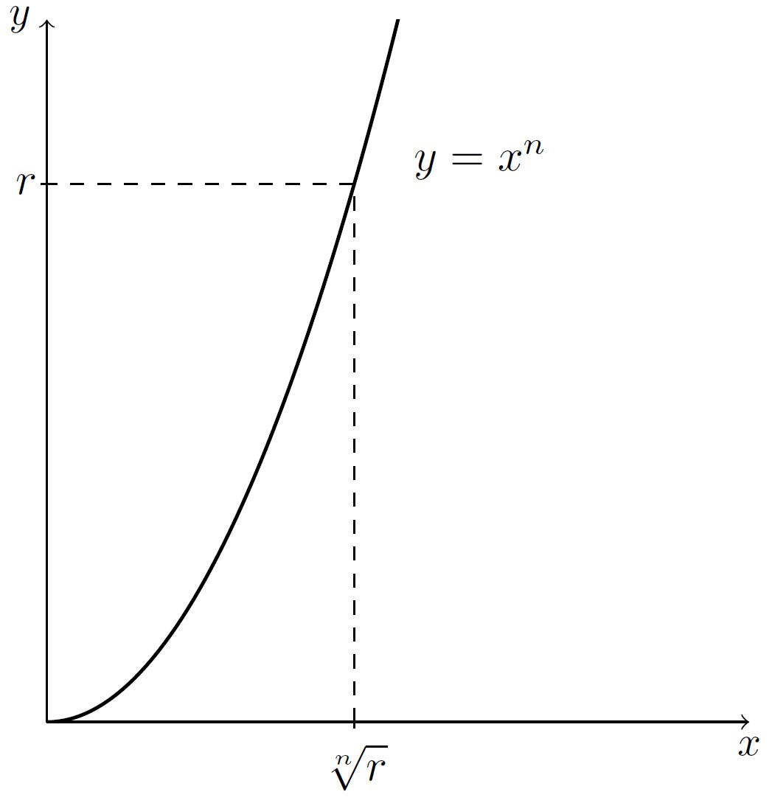

10 Racines \(n\)-ièmes
\[ \newcommand{\R}{\mathbb{R}} \newcommand{\Q}{\mathbb{Q}} \newcommand{\C}{\mathbb{C}} \newcommand{\N}{\mathbb{N}} \newcommand{\Z}{\mathbb{Z}} \newcommand{\zbar}{\overline{z}} \newcommand{\RE}{\textrm{Re}\,} \newcommand{\IM}{\textrm{Im}\,} \newcommand{\Arg}{\textrm{Arg}\,} \newcommand{\iu}{\textrm{i}} \newcommand{\eu}{\textrm{e}} \newcommand{\boitevide}{\square} \]
10.1 Racines carrées
Nous avons étudié un peu plus tôt la fonction racine carrée (voir la définition 4.3), qui à un nombre positif \(a\) lui associe un nombre positif, noté \(\sqrt{a}\), dont le carré est \(a\). Il arrive souvent qu’on fasse allusion aux racines carrées d’un nombre \(x\), aussi appelées racines deuxièmes. Dans ce cas, il est important de comprendre qu’on considère alors toutes les solutions de l’équation \(x^2=a\). Outre le nombre \(0\) qui ne possède qu’une racine carrée (à savoir \(0\)), un nombre complexe possède exactement deux racines carrées. la proposition ci-dessous affirme que tout nombre complexe non nul possède exactement deux racines carrées.
Dans le cas où nous cherchons les racines d’un nombre réel strictement positif \(a,\) nous avons que \(\sqrt{a}\) est bien défini, et on constate que \(\left(-\sqrt{a}\right)^2=(-1)^2\left(\sqrt{a}\right)^2=a\). Ainsi, \(\sqrt{a}\) et \(-\sqrt{a}\) sont les deux racines carrées de \(a\). Le fait qu’il n’y ait pas plus de deux racines carrées est une conséquence du théorème fondamental de l’algèbre.
Maintenant, dans le cas où nous cherchons les racines d’un nombre réel strictement négatif \(a\), alors \(-a>0\) et \(\sqrt{-a}\) est bien défini. On constate alors que le carré des nombres \(\iu\sqrt{-a}\) et \(-\iu\sqrt{-a}\) est \(a\). Nous avons donc déterminé les deux racines carrées de \(w\) lorsque sa partie imaginaire est nulle.
Proposition 10.1: Racines carrées d’un nombre complexe
Preuve. Admettons encore une fois qu’un nombre ne peut posséder plus de deux racines carrées. Il nous suffit donc d’exhiber deux racines carrées pour les connaître toutes.
Comme le carré d’un nombre réel donne toujours un nombre réel, si \(b\neq 0\), il en découle que \(\IM{z}\neq 0\), d’où \(y\neq 0\). On doit ainsi trouver \(x\) est \(y\), avec \(y\neq 0\), tels que \((x+\iu\,y)^2=a+b\iu.\) En égalant parties réelles et imaginaires, on obtient le système d’équations suivant : \[\begin{align} x^2-y^2&=a, &(\star)\\ 2xy&=b. &(\star\star) \end{align}\] Puisque \(y\neq 0\), l’équation \((\star\star)\) implique que \(x=\frac{b}{2y}\). En remplaçant \(x\) ans l’équation \((\star)\), et après avoir fait quelques manipulations algébriques, nous obtenons l’équation \[4y^4+4ay^2-b^2=0.\] En posant \(r=y^2\), nous devons maintenant résoudre l’équation \(4r^2+4ar-b^2=0.\) En utilisant la formule quadratique, on trouve que \[r=\frac{1}{2}\left(-a\pm\sqrt{a^2+b^2}\right).\] De ces deux solutions, on doit rejeter \(\frac{1}{2}\left(-a-\sqrt{a^2+b^2}\right)\). En effet, comme \(b\neq 0\), \(\sqrt{a^2+b^2}>|a|\), ce qui voudrait dire que \(r<0\). Or, \(r=y^2\) et \(y\) est un nombre réel. On doit donc avoir \(r\geq 0\). Notons que la condition \(\sqrt{a^2+b^2}>|a|\) implique que \(-a+\sqrt{a^2+b^2}>0\), ce qui nous assure que \(r=\frac{1}{2}\left(-a+\sqrt{a^2+b^2}\right)\) est admissible pour correspondre à \(y^2\). Ainsi, les deux valeurs possibles pour \(y\) sont données par \[y=\pm\sqrt{\frac{1}{2}\left(-a+\sqrt{a^2+b^2}\right)}.\] En remplaçant ces valeurs de \(y\) dans l’équation \(x=\frac{b}{2y}\), on obtient que \[x=\pm\frac{b}{\sqrt{2\left(-a+\sqrt{a^2+b^2}\right)}}.\] Cela donne lieu aux deux racines ci-dessous: \[x+\iu\,y=\pm\left(\frac{b}{\sqrt{2\left(-a+\sqrt{a^2+b^2}\right)}}+\iu\sqrt{\frac{1}{2}\left(-a+\sqrt{a^2+b^2}\right)}\right).\]
Il est aussi possible de calculer les racines d’un nombre complexe \(w\) en remarquant que si \(r\) est une racine carrée de \(w\), alors \(|r|^2=|w|\). En effet, par définition de \(r\), \(r^2=w\). Puis, en utilisant la proposition 4.15, on déduit que \(|r|^2=|w|\). Illustrons ce résultat par un exemple.
Définition 10.1: Racines \(n\)-ièmes
Dans le cas particulier où \(w\) est un nombre réel positif, l’étude du graphe de la fonction \(f(x)=x^n\) nous permet de déduire que parmi les racines \(n\)-ièmes de \(w\), précisément une d’elles est un nombre réel positif. Si \(r\) est un nombre réel positif, sa racine \(n\)-ième positive est notée \(\sqrt[n]{r}\). Cette observation est cruciale pour exprimer les racines \(n\)-ièmes d’un nombre complexe arbitraire.

Lorsqu’on parle de la racine \(n\)-ième d’un nombre \(x\), on fait allusion à l’unique nombre réel qui, élevé à la puissance \(n\), donne \(x\). Ainsi, bien qu’il existe \(4\) nombres complexes \(z\) vérifiant \(z^4=16\), il est courant de dire que \(2\) est la racine quatrième de \(16\).
Quelles que soient les valeurs de \(a\) et \(b\), nous avons que \[\begin{align*} \cos(a+b)&=\cos a\cos b-\sin a\sin b,\\ \sin(a+b)&=\cos a\sin b+\sin a\cos b. \end{align*}\]
Théorème 10.2: Valeurs des racines \(n\)-ièmes
Soit \(w\in\C^{\star}\), et soit \(n\in\{2,3,\ldots\}\). Notons \(r\) le module de \(w\) et \(\theta\) un de ses arguments. Le nombre \(w\) possède \(n\) racines \(n\)-ièmes distinctes, ayant toutes un module de \(\sqrt[n]{r}\), et dont les arguments principaux sont égaux aux nombres \(\frac{\theta}{n},\frac{\theta+2\pi\cdot 1}{n},\frac{\theta+2\pi\cdot 2}{n},\frac{\theta+2\pi\cdot 3}{n},\ldots,\frac{\theta+2\pi\cdot (n-1)}{n}\) (à un multiple de \(2\pi\) près).
Preuve. Puisque \(w\in\C^{\star}\), \(w\) peut s’écrire sous la forme polaire. On peut donc trouver un unique \(r\in\,]0,\,\infty[\) et \(\theta \in\R\) tels que \(w=r\left(\cos\theta+\iu\sin\theta\right)\). Notons qu’il y a une infinité de possibilités pour \(\theta\). En effet, les arguments possibles pour \(\theta\) forment l’ensemble de tous les nombres réels égaux à l’argument principal de \(w\), auquel on peut ajouter des multiples de \(2\pi\).
Une nombre \(z\) vérifiant \(z^n=w\) sera forcément non nul. En effet, quelle que soit la valeur de \(n\) choisie dans l’ensemble \(\{2,3,\ldots\}\), \(0^n=0.\) Comme \(w\) est non nul, on conclut que \(z\) est lui aussi différent de \(0\), et peut donc s’écrire sous forme polaire. Posons \(z=s\left(\cos t+\iu\sin t\right).\) D’après la formule de De Moivre, nous avons que
\[\begin{equation} s^n\left(\cos (nt)+\iu\sin (nt)\right)=r\left(\cos\theta+\iu\sin\theta\right). \end{equation}\]
Le module du nombre complexe dans le membre de gauche de l’équation précédente est \(s^n\) et celui du membre de droite de cette même équation est \(r.\) Comme ils doivent être égaux, on en déduit que \(s=\sqrt[n]{r}.\) Une fois les modules simplifiés dans l’équation, on doit trouver toutes les valeurs de \(t\) telles que \[\cos (nt)+\iu\sin (nt)=\cos\theta+\iu\sin\theta,\] ce qui revient à identifier les valeurs de \(t\) telles que \[\cos (nt)-\cos\theta+\iu\left(\sin (nt)-\sin\theta\right)=0.\] Puisqu’un nombre complexe \(z\) est nul si et seulement si \(|z|^2=0\), l’équation précédente est équivalente à \[\cos^2(nt)-2\cos(nt)\cos\theta+\cos^2\theta+\sin^2(nt)-2\sin(nt)\sin\theta+\sin^2\theta=0.\] En observant que \(\cos^2(nt)+\sin^2(nt)=1\) et que \(\cos^2\theta+\sin^2\theta=1\), on obtient l’équation \[1=\cos(nt)\cos\theta+\sin(nt)\sin\theta.\] En utilisant une identité trigonométrique (voir encadré ci-contre), on constate que l’équation précédente est équivalente à \(\cos(nt-\theta)=1\). Comme la fonction \(\cos\) prend la valeur \(1\) si et seulement si son argument est un multiple de \(2\pi\), on en déduit que \(nt-\theta=2k\pi\) où \(k\in\Z\), d’où \[t=\frac{\theta+2k\pi}{n}, k\in\Z.\]
Nous allons maintenant montrer que si \(k\) est un entier n’appartenant pas à l’ensemble \(\{0,1,2,\ldots,n-1\}\), alors la valeur de \(t\) qui lui est associée est égale à un multiple de \(2\pi\) près à une valeur de \(t\) associé à un nombre de l’ensemble \(\{0,1,2,\ldots,n-1\}\). Un nombre entier \(k\) peut toujours s’écrire comme \(k=qn+r\), où \(q\in\Z\) et \(r\in\{0,1,2,\ldots,n-1\}\). On a alors que \[t=\frac{\theta+2k\pi}{n}=\frac{\theta+2(qn+r)\pi}{n}=\frac{\theta+2r\pi}{n}+2q\pi.\]
Comme ajouter un multiple de \(2\pi\) à l’argument des fonctions \(\sin\) et \(\cos\) ne change pas leur valeur, il n’y aura pas plus de \(n\) racines, une pour chaque nombre dans l’ensemble \(\{0,1,2,\ldots,n-1\}\). Finalement, comme les \(n\) nombres de l’ensemble précédent sont associés à des valeurs de \(t\) par bonds de \(\frac{2\pi}{n}\) à partir de l’angle \(\frac{\theta}{n}\), en se limitant à \(n-1\) bonds, nous ne pouvons pas revenir à l’angle \(\frac{\theta}{n}\) sur le cercle trigonométrique. Ainsi, à chaque nombre dans l’ensemble \(\{0,1,2,\ldots,n-1\}\) correspond une unique racine \(n\)-ième de \(w\). Il s’agit là des seules solutions de l’équation \(z^n=w\).
Exemple 10.1: Racines quatrièmes de \(16\)
Trouvez la forme cartésienne, polaire et exponentielle des racines quatrièmes de \(16\).
Le nombre \(16\) s’écrit \(16(\cos 0+\iu\sin 0)\) sous forme polaire. Ses racines quatrièmes auront toutes pour module \(\sqrt[4]{16}=2\). Pour trouver les arguments principaux des racines, on calcule les \(4\) valeurs prises par \(\frac{0}{4}+\frac{2k\pi}{4}\) lorsque \(k\) prend les valeurs \(0,1,2\) et \(3\). On trouve \(\theta_0=0,\theta_1=\frac{\pi}{2},\theta_2=\pi\) et \(\theta_3=\frac{3\pi}{2}\). Parmi ces arguments, seul \(\theta_3\) n’est pas dans l’intervalle \(]-\pi,\,\pi]\). L’argument principal qui lui est équivalent est \({\theta_3}^{\star}=-\frac{\pi}{2}\).
| Racine | Expo. | Pol. | Cart. |
|---|---|---|---|
| \(z_0\) | \(2\eu^{\iu 0}\) | \(2\left(\cos 0+\iu\sin 0\right)\) | \(2\) |
| \(z_1\) | \(2\eu^{\iu \frac{\pi}{2}}\) | \(2\left(\cos \frac{\pi}{2}+\iu\sin \frac{\pi}{2}\right)\) | \(2\iu\) |
| \(z_2\) | \(2\eu^{\iu\pi}\) | \(2\left(\cos \pi+\iu\sin \pi\right)\) | \(-2\) |
| \(z_3\) | \(2\eu^{-\iu \frac{\pi}{2}}\) | \(2\left(\cos \left(-\frac{\pi}{2}\right)+\iu\sin \left(-\frac{\pi}{2}\right)\right)\) | \(-2\iu\) |